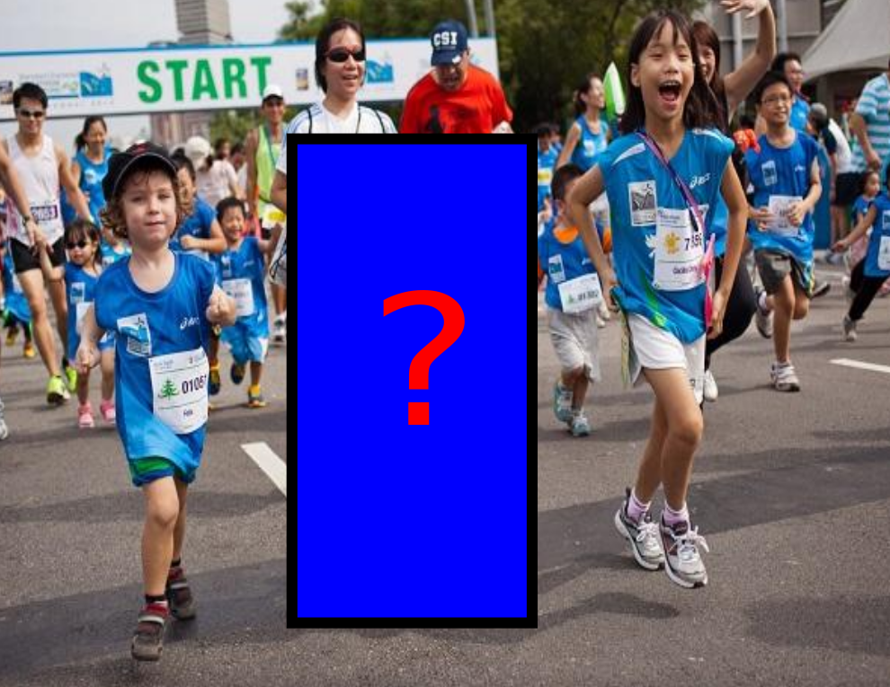
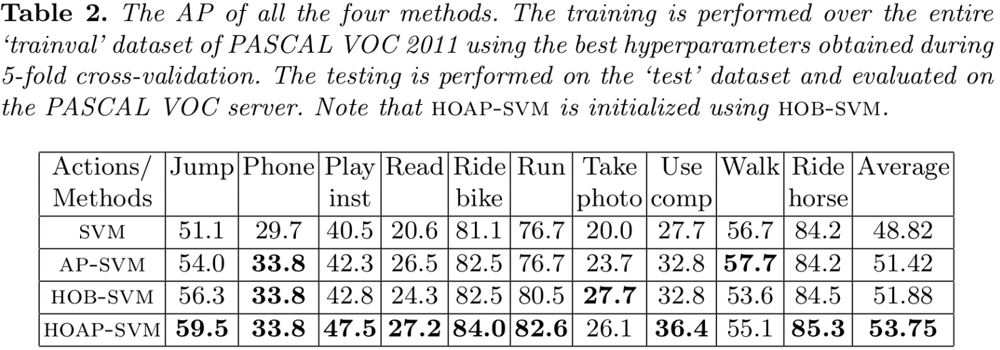

Overview
The objective of this work is to improve ranking (more specifically Average Precision) by using High-Order Information.
Plenty of High-Order Information is available, for example, in case of action classification, one can use the fact that persons in the same image are more likely to perform the same action. For example
 $\Rightarrow$ What is the action
of the person in the
bounding box?$\Rightarrow$ $\Rightarrow$ The answer is
'running'. The
confidence while
answering increases
if we know the context.Similarly, plenty of high-order information is available in the problems such as object detection, document retrieval, pedestrian detection, and link prediction. Some more real world examples where high-order information can be visually seen:
In order to achieve the goal of improving ranking while using High-Order information we propose two learning frameworks - High-Order binary SVM (HOB-SVM) and High-Order average precision SVM (HOAP-SVM). Table below shows the comparison between all the frameworks.
High-Order Binary SVM (HOB-SVM)
Preliminary
-
Input: Set of $n$ samples ${\bf X} = \{{\bf x}_i,i=1,\cdots,n\}$.
-
Output: Assignment of a class for each sample, ${\bf Y} = \{y_i,i=1,\cdots,n\}$ where $y_i \in \{0,1\}$.
-
Joint Feature Vector ($\Psi({\bf X},{\bf Y})$): The first part $\Psi_1({\bf X},{\bf Y})$ captures first-order information, and the second part $\Psi_2({\bf X},{\bf Y})$ captures the high-order information. Given ${\bf X}$, ${\bf Y}$, and the parameters ${\bf w}$, the score for the HOB-SVM is defined as follows:
\begin{eqnarray} {\bf w}^\top \Psi({\bf X},{\bf Y}) = \left( \begin{array}{c} {\bf w}_1 \\ {\bf w}_2 \end{array} \right)^\top \left( \begin{array}{c} \Psi_1({\bf X},{\bf Y}) \\ \Psi_2({\bf X},{\bf Y}) \end{array} \right) = \left( \begin{array}{c} {\bf w}_1 \\ {\bf w}_2 \end{array} \right)^\top \left( \begin{array}{c} \sum_i \psi_1({\bf x}_i,y_i) \\ \sum_{i,j}\psi_2({\bf x}_i,y_i,{\bf x}_j,y_j) \end{array} \right) \end{eqnarray} -
Loss function: Weighted fraction of misclassifications (0/1 loss).
Parameter Learning
The parameters of HOB-SVM are obtained by solving the following convex optimization problem. \begin{eqnarray} \min_{\bf w} && \frac{1}{2}{||{\bf w}||^2} + C \xi, \\ && {\bf w}^\top\Psi({\bf X},{\bf Y}) - {\bf w}^\top\Psi({\bf X},\overline{\bf Y}) \geq \Delta({\bf Y}^*,\overline{\bf Y}) - \xi, \forall \overline{\bf Y}, {\bf w}_2 \leq 0. \nonumber \end{eqnarray} We use the cutting-plane algorithm [6] to handle exponentially many constraints. Due to the supermodularity constraint ${\bf w}_2 \leq 0$, the loss augmented inference step is solved using the graph-cut. In the absence of the supermodularity constraint any approximate inference technique can be used.
Ranking using Max-marginals
HOB-SVM assigns one score ${\bf w}^\top\Psi({\bf X},{\bf Y})$ for all the samples taken together. This prevents us from specifying a ranking of the samples.
-
We propose to use difference of max-marginal scores. Formally, we define the max-marginal of a sample ${\bf x}_i$ belonging to the positive class $m_i^+({\bf w})$ as:
\begin{eqnarray} m_i^+({\bf w}) = {\bf w}^\top\Psi({\bf X},{\bf Y}_i^+), {\bf Y}_i^+ = argmax_{{\bf Y},y_i = 1} {\bf w}^\top\Psi({\bf X},{\bf Y}). \\ \end{eqnarray} -
Max-marginal captures high-order information and can be calculated efficiently for all the samples using dynamic graph cuts algorithm [5].
-
Given the max-marginals $m_i^+({\bf w})$ and $m_i^-({\bf w})$, the ranking is obtained by sorting the scores $s_i({\bf w})$ defined as:
\begin{equation} s_i({\bf w}) = m_i^+({\bf w})-m_i^-({\bf w}). \end{equation}
High-Order Average Precision SVM (HOAP-SVM)
Preliminary
-
Input: Set of $n$ samples ${\bf X} = \{{\bf x}_i,i=1,\cdots,n\}$. Similar to AP-SVM [3], a sample can belong to the positive class or the negative class.
-
Output: Ranking matrix ${\bf R}$, defined similar to AP-SVM [3].
-
Given an input ${\bf X}$ and a ranking ${\bf R}$, the score for the ranking specified by HOAP-SVM is defined as follows: \begin{equation} \label{eq:m4score} S({\bf X},{\bf R};{\bf w}) = \gamma \sum_{i\in{\cal P}}\sum_{j\in{\cal N}} {\bf R}_{ij} (s_i({\bf w})-s_j({\bf w})), \gamma = \frac{1}{|{\cal P}||{\cal N}|}. \end{equation} Note that, $s_i({\bf w})$ is the difference of max-marginal scores (as defined in HOB-SVM), therefore, captures high-order information.
-
Loss function: The loss function is defined as $\Delta({\bf R}^*, {\bf R}) = 1 - AP({\bf R}^*, {\bf R})$, where $AP({\bf R}^*,{\bf R})$ denote the average precision of the ranking matrix ${\bf R}$ with respect to the ground truth ranking ${\bf R}^*$. Minimizing $\Delta({\bf R}^*, {\bf R})$ is equivalent to maximizing average precision $AP({\bf R}^*, {\bf R})$.
Parameter Learning
The parameters of HOAP-SVM are learned by solving the following difference of convex optimization problem: \begin{eqnarray} \min_{\bf w} && \frac{1}{2}{||{\bf w}||^2} + C\xi, \\ &&S({\bf X},{\bf R}^*;{\bf w}) - S({\bf X},{\bf R};{\bf w}) \geq \Delta({\bf R}^*,{\bf R}) - \xi, \forall {\bf R}, {\bf w}_2 \leq 0. \nonumber \end{eqnarray}
A local minima is obtained using CCCP algorithm [4]. The max-marginals for each sample is calculated efficiently using dynamic graph-cut [5]. The loss augmented inference is done efficiently using the greedy algorithm of Yue. et. al [3]. The initialization of CCCP is done using HOB-SVM.Ranking
Similar to HOB-SVM, the ranking is obtained by sorting the sample scores $s_i({\bf w})$.
Results
We tested HOB-SVM and HOAP-SVM using a challenging problem of Action Classification. We provide a comparison of HOB-SVM and HOAP-SVM with SVM and AP-SVM. The details of all the experiments are provided in our ECCV 2014 paper.
Action Classification
Problem Formulation: Given an action and a set of person bounding boxes along with the corresponding images, the desired output is a ranking of the bounding boxes according to their relevance to the given action.
Dataset: We use the PASCAL VOC 2011 action classification dataset, which consists of 4846 images depicting 10 action classes.
Features: We use the poselet-based activations of the bounding boxes and GIST of the entire image to capture the first-order information. Only poselet based activations are used to capture the high-order information.
High-Order Information: Our hypothesis is that "persons in the same image are more likely to perform same action". In other words, samples coming from the same images were fully connected to each other. Note that once could use any other high-order information in the proposed frameworks.
Figures below show the difference of average AP for the five fold cross validation over the entire trainval dataset for all the 10 action classes. Note that AP-SVM vs SVM means average precision of AP-SVM minus the average precision of SVM. Similarly for others.
AP-SVM vs SVM HOB-SVM vs SVM HOB-SVM vs AP-SVM HOAP-SVM vs SVM HOAP-SVM vs AP-SVM 
Figures below show the difference of average precision for the VOC test data evaluated using the VOC Evaluation server. Note that AP-SVM vs SVM means average precision of AP-SVM minus the average precision of SVM. Similarly for others.
AP-SVM vs SVM HOB-SVM vs SVM HOB-SVM vs AP-SVM HOAP-SVM vs SVM HOAP-SVM vs AP-SVM  Figure below shows the top 8 samples ranked by all the four methods for the reading action class. First row: SVM, Second row: AP-SVM, Third row: HOB-SVM, and Fourth row: HOAP-SVM. (Click on the Image for the description)
More Results
In order to better visualize the effect of high-order information while learning to rank, we show the ranked samples in order by all the four methods on all the 5 test folds for all the 10 action classes. The advantages and disadvantages of incorporating high-order information can be seen in the provided ranked samples. We also provide the ranked samples by all the four methods on the VOC test dataset.
Jumping Fold 1 Fold 2 Fold 3 Fold 4 Fold 5 VOCtest Phoning Fold 1 Fold 2 Fold 3 Fold 4 Fold 5 VOCtest Playing Instrument Fold 1 Fold 2 Fold 3 Fold 4 Fold 5 VOCtest Reading Fold 1 Fold 2 Fold 3 Fold 4 Fold 5 VOCtest Riding Bike Fold 1 Fold 2 Fold 3 Fold 4 Fold 5 VOCtest Running Fold 1 Fold 2 Fold 3 Fold 4 Fold 5 VOCtest Taking Photo Fold 1 Fold 2 Fold 3 Fold 4 Fold 5 VOCtest Using Computer Fold 1 Fold 2 Fold 3 Fold 4 Fold 5 VOCtest Walking Fold 1 Fold 2 Fold 3 Fold 4 Fold 5 VOCtest Riding Horse Fold 1 Fold 2 Fold 3 Fold 4 Fold 5 VOCtest
Resources
The source code and the data will be available soon. For a pre-released version please email: puneet dot kumar at inria dot fr; pueetkdokania at gmail dot com.
Relevant Publications
ECCV, 2014
References
[1] Vapnik, V.: Statistical learning theory. Wiley (1998)
[2] Tsochantaridis, I., Hofmann, T., Joachims, T., Altun, Y.: Support vector machine learning for interdependent and structured output spaces. In: ICML (2004)
[3] Yue, Y., Finley, T., Radlinski, F., Joachims, T.: A support vector method for optimizing average precision. In: SIGIR (2007)
[4] Yuille, A., Rangarajan, A.: The concave-convex procedure. Neural Computation (2003)
[5] Kohli, P., Torr, P.: Dynamic graph cuts for efficient inference in Markov random fields. In: PAMI (2007)
[6] Joachims, T., Finley, T., Yu, C.: Cutting-plane training of structural SVMs. Machine Learning (2009)Acknowledgements
Pawan Kumar is partially funded by the European Research Council under the European Community's Seventh Framework Programme (FP7/2007-2013)/ERC Grant agreement number 259112, and Puneet Dokania is funded by the Ministère de l'éducation nationale, de l'enseignement supérieure et de la recherche.
Contact
This project page is created and maintained by Puneet Kumar Dokania. In case of any suggestion please email: pueetkdokania at gmail dot com .